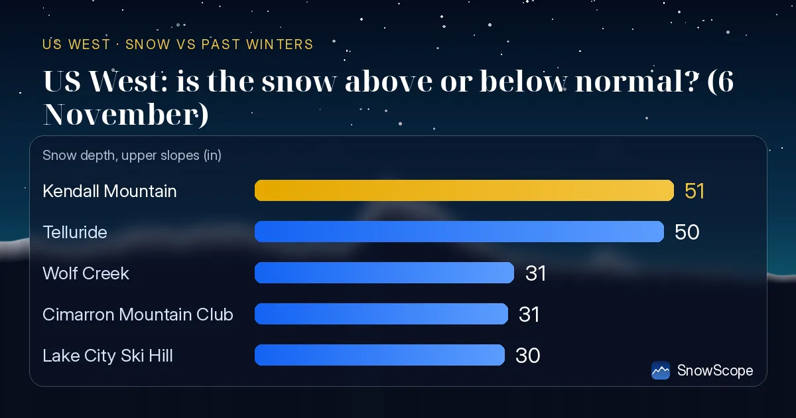

US West: is the snow above or below normal? (6 November)
Early November brought mixed results across the US West. While Telluride and Wolf Creek are running well ahead of their seasonal average, Kendall Mountain sits near normal, and Lake City Ski Hill still lacks cover at lower elevations.
See the live snow forecast for Kendall Mountain in the SnowScope appSnow depth, powder alerts and the 3D map, free.
Which resorts are ahead and which are behind
Telluride leads by comparison with past winters. At 10,620 ft (3,237 m), SnowScope shows 14 in (36 cm) on 6 November—deeper than on this date in 37 of the past 46 winters. The usual depth for Telluride at this height is 5 in (13 cm).
Wolf Creek follows closely. At 11,010 ft (3,356 m), the map shows 22 in (57 cm), which beats the historical average in 35 of the past 46 winters (normal: 5 in (13 cm)). Both resorts have built a reserve well before most winters reach this point.
| Resort | Snow depth | New snow, 72 h | Coming, next days | Top |
|---|---|---|---|---|
| Kendall Mountain | 51 in (129 cm) | 2 in (4 cm) | 0 in (1 cm) | 9,528 ft (2,904 m) |
| Telluride | 50 in (126 cm) | 2 in (5 cm) | 0 in (1 cm) | 12,507 ft (3,812 m) |
| Wolf Creek | 31 in (80 cm) | 0 in (1 cm) | 0 in (0 cm) | 11,762 ft (3,585 m) |
| Cimarron Mountain Club | 31 in (78 cm) | 2 in (5 cm) | 0 in (0 cm) | 11,355 ft (3,461 m) |
| Lake City Ski Hill | 30 in (77 cm) | 1 in (3 cm) | 0 in (1 cm) | 9,081 ft (2,768 m) |

The middle tier and slow starters
Cimarron Mountain Club sits in the middle ground. At 10,584 ft (3,226 m), 7 in (19 cm) puts it ahead of the historical average for this date, deeper than in 31 of the past 46 winters (usual: 4 in (9 cm)). It is a solid platform for November.
Kendall Mountain runs close to normal. At 9,413 ft (2,869 m), only 2 in (5 cm) is about average for the date, deeper than in 21 of the past 46 winters (normal: 2 in (6 cm)). This is not a setback, just not exceptional.
Lake City Ski Hill lags the most. At 8,970 ft (2,734 m), SnowScope shows no snow there yet. The usual depth on this date is 1 in (3 cm), so only 4 of the past 46 winters have been this bare at this hour. The base altitude works against early-season skiers here.
What you will find on the ground
Depths at upper slopes tell one story; conditions on the mountain tell another. Kendall Mountain holds the most snow overall at 51 in (129 cm) on its upper slopes, followed by Telluride at 50 in (126 cm) and Wolf Creek at 31 in (80 cm). Yet Telluride's higher altitude means that snow is spread across a bigger vertical range, while Kendall's compact terrain concentrates cover in a smaller area.
Across the region, 140 of 195 resorts have snow on their upper slopes. SnowScope counts about 82,500 sq mi (213,690 km²) of snow-covered ground as of 6 November. The region is not bare, but early-season snow is still thin enough that rocks and grass hide just below the surface on many slopes.
Altitude explains the spread
Height matters more than you might think. Telluride's upper slopes reach 12,507 ft (3,812 m), where SnowScope shows 42 in (108 cm). But at its mid-mountain level (10,620 ft / 3,237 m), only 14 in (36 cm) sits on the ground. Drop to the base at 8,734 ft (2,662 m) and snow thins to just 1 in (3 cm). This vertical spread forces early-season choices: ski high for depth or accept patchy cover lower down.
Wolf Creek and Cimarron Mountain Club show similar patterns. Where ridges stay above 11,000 ft (3,350 m), snow holds up well. Mid-mountain zones still have cover, but it thins as you descend. Lake City Ski Hill, with its top at only 9,075 ft (2,768 m), stays in a warmer zone where November melt is quicker.
What comes next
Until 9 November, forecasts call for trace amounts (about 0 in / 1 cm) at Kendall Mountain, Telluride, and Lake City Ski Hill. The near-term pattern offers little help to thin-snow areas. That said, forecasts a few days out can shift: return to the map the day before you travel to catch any changes.
Tips for skiers
- Target high elevation and north-facing slopes: they retain snow longest while south-facing aspects burn off quickly in the sun.
- Early November snow is thin. Stay on groomed, open terrain—rocks and dead grass lie just beneath the surface and can wreck a ski or board.
- Check the resort's website for lift status and opening dates before you drive. SnowScope shows snow depth, not which runs are open.
- Altitude is your friend: at Telluride and Wolf Creek, the upper mountain has real snow; lower zones are still marginal.
- Get a powder alert in the SnowScope app to know when fresh snow arrives at Telluride or Wolf Creek—the two resorts most likely to see meaningful accumulation in the next few days.
About these numbers
Resort snow depths are the deepest snow on the resort's upper slopes on the date shown; they are estimates for an area, not a measurement at one point. Forecasts can change. Always read the official avalanche bulletin before going off-piste.
Official avalanche bulletins: avalanche.org
Cite this report
For research, teaching or the press: the numbers and charts are free to reuse under CC BY 4.0 with this citation.
SnowScope (2026), US West: is the snow above or below normal? (6 November), https://snowscope.app/blog/en/2026/11/us-west-snow-vs-past-winters-6-november-2026.html, accessed 2026-11-06
SnowScope (Atlas Labs). (2026, November 6). US West: is the snow above or below normal? (6 November). SnowScope snow reports. https://snowscope.app/blog/en/2026/11/us-west-snow-vs-past-winters-6-november-2026.html
BibTeX
@misc{snowscope2026uswestsnowvspastwinters6,
author = {{SnowScope (Atlas Labs)}},
title = {US West: is the snow above or below normal? (6 November)},
year = {2026},
month = nov,
howpublished = {\url{https://snowscope.app/blog/en/2026/11/us-west-snow-vs-past-winters-6-november-2026.html}},
note = {Published 2026-11-06 18:30 UTC; accessed 2026-11-06}
}· CC BY 4.0 · Methods, data and tools →
Kendall Mountain: snow and temperature by height, this winter vs last (tools) →
Follow Kendall Mountain
Free: a message when fresh snow is coming, and the forecast every morning.
More snow reports

Getting to Telluride in winter, airport by airport: Telluride Regional, Montrose, the drive on Highway 145 with the Colorado traction law, and the free gondola to Mountain Village.

Kendall Mountain has the deepest snow in the US West at 50 in (127 cm) upper slopes. Snow covers 74,363 sq mi across the region on 7 November.

Telluride got 12 in (31 cm) of new snow in the last 72 hours, 1 in (3 cm) of it in the last 24 hours. It now has about 46 in (118 cm) on its upper …